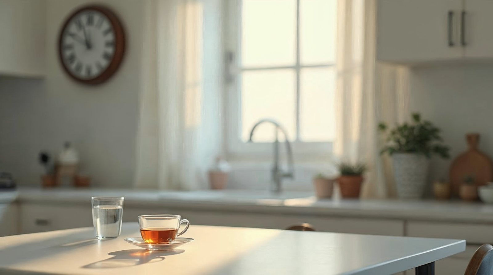
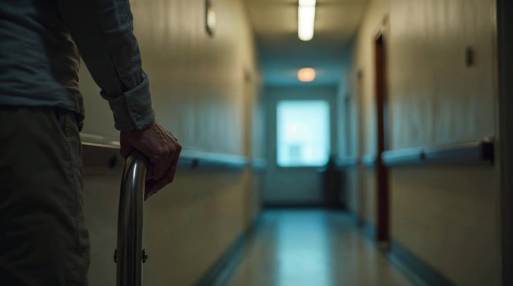
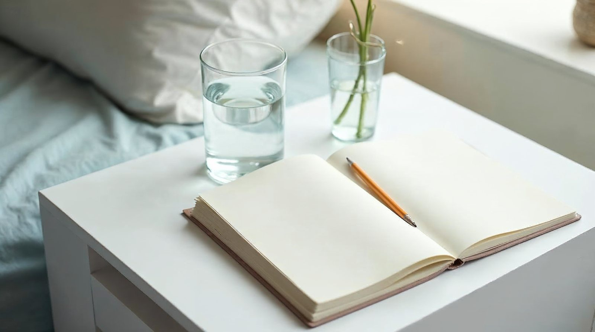
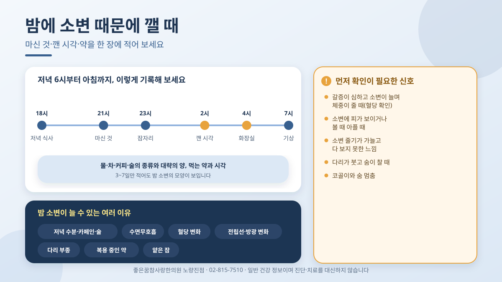

이종호 한의사 감수좋은꿈참사랑한의원 대표원장 (한의사 면허번호 19769)발행 2026-11-22 · 수정 2026-11-26
이 글의 차례
새벽 세 시, 아랫배가 묵직해서 눈이 떠집니다. 잠결에 화장실에 다녀와 다시 이불 속으로 들어가는데, 이번에는 잠이 쉽게 오지 않습니다. 겨우 잠들었나 싶으면 다섯 시쯤 또 깹니다. 아침에 일어나면 밤새 잔 것 같지 않고 몸이 천근만근입니다.
진료실에서 이런 이야기를 참 자주 듣습니다. 밤에 소변 때문에 한 번쯤 깨는 일은 나이가 들수록 흔하지만, 매일 밤 여러 번 깨고 다시 잠들기 어렵다면 원인을 나눠 살펴볼 때입니다. 저는 먼저 소변이 마려워서 깨는 것인지, 잠이 얕아 깬 김에 화장실에 가는 것인지를 함께 구분해 봅니다.
"나이 들면 다 그렇죠" 하고 넘기셨다면
밤 소변 이야기를 꺼내면 많은 분이 겸연쩍게 웃으십니다. "나이 들면 다 그렇다던데요." "이런 걸로 병원에 와도 되나 싶었어요." 그 마음을 압니다. 화장실 이야기는 어쩐지 남에게 하기 쑥스럽고, 큰 병도 아닌 것 같아 그냥 참고 지내게 되지요.
하지만 저는 이 불편을 가볍게 여기지 않으셨으면 합니다. 밤에 두세 번씩 깨는 날이 이어지면 잠이 조각나고, 조각난 잠은 다음 날의 기운과 기분을 갉아먹습니다. 어르신이라면 깜깜한 밤에 비몽사몽 화장실을 오가다 넘어지실까 걱정도 됩니다.
곁에서 함께 자는 가족도 그때마다 덩달아 깹니다. 미안한 마음에 소리 죽여 조심조심 오가다 보면 본인의 잠은 더 얕아집니다. 그렇게 몇 달을 지내다 보면 밤이 오는 것 자체가 반갑지 않게 됩니다. 밤 소변은 결국 잠의 문제이고, 하루 전체의 문제입니다.
깨서 가는 걸까요, 가려고 깨는 걸까요
제가 가장 먼저 여쭙는 질문은 이것입니다. "소변이 마려워서 깨세요, 아니면 깨고 나니 소변이 마려우세요?" 비슷해 보이지만 살펴볼 곳이 꽤 다릅니다.
아랫배가 꽉 차서 그 느낌에 잠이 깨고, 화장실에 가면 소변이 제법 많이 나온다면 밤사이 소변이 많이 만들어지는 쪽을 먼저 봅니다. 반대로 눈이 먼저 떠지고 깬 김에 화장실에 다녀오는데 막상 양은 얼마 안 된다면, 소변보다 잠이 얕아진 쪽을 먼저 의심해 볼 수 있습니다.
꿈을 꾸다 깼는데 그 김에 화장실에 간다는 분, 옆 사람 뒤척이는 소리에 깼다가 간다는 분도 계십니다. 이런 경우라면 소변을 줄이는 것보다 잠을 깊게 하는 쪽을 먼저 살펴야 합니다.
이 구분이 처음엔 잘 안 되는 분이 많습니다. 그래서 며칠만 화장실에 갈 때 양이 많았는지 적었는지 아침에 한 줄 적어 보시라고 권합니다.
왜 밤에 소변이 늘어날까요
밤 소변에는 여러 사정이 겹치는 경우가 많습니다. 저녁 이후에 물, 차, 국물을 많이 드시면 당연히 밤 소변이 늘 수 있고, 커피나 녹차의 카페인과 술은 소변을 늘리면서 잠까지 얕게 만들 수 있습니다.
자는 동안 숨이 반복해서 멎는 수면무호흡이 있으면 소변을 만드는 몸의 신호가 달라져 밤 소변이 늘 수 있는 것으로 알려져 있습니다. 혈당이 높으면 갈증과 소변량이 함께 늘어 밤에도 화장실을 찾게 됩니다.
전립선이나 방광에 변화가 있으면 소변 줄기가 약하거나 다 보지 못한 느낌이 남아 자주 가게 됩니다. 낮 동안 다리에 고였던 수분이 누우면 몸 쪽으로 돌아와 밤 소변이 늘기도 하는데, 이건 심장이나 신장 상태와 관련된 경우도 있어 확인이 필요합니다.
이뇨제처럼 소변을 늘리는 약은 먹는 시각에 따라 밤 소변에 영향을 줍니다. 그리고 방광은 괜찮은데 잠이 얕아서 작은 신호에도 깨는 경우가 생각보다 많습니다.
새로 시작한 약이 있다면 그 뒤로 밤 소변이 달라졌는지도 떠올려 보세요. 약을 바꾼 시기와 깨기 시작한 시기가 겹친다면 처방한 의사에게 그 사실을 알려 드리는 것이 좋습니다. 한 가지 원인만 있는 경우보다 두세 가지가 겹친 경우를 더 자주 만납니다. 저녁 국물에 맥주 한 캔, 그 위에 얕은 잠이 겹치는 식이지요. 그래서 하나씩 나눠 보는 일이 중요합니다.
남성과 여성, 조금 다르게 살펴볼 것
밤 소변의 사정은 남성과 여성이 조금 다르기도 합니다. 중년 이후 남성이라면 소변 줄기가 예전보다 약해졌는지, 시작할 때 한참 기다려야 하는지, 보고 나서도 남은 느낌이 있는지를 여쭙습니다. 이런 모습이 있다면 전립선 상태를 비뇨의학과에서 먼저 확인해 보시길 권합니다.
여성이라면 기침하거나 웃을 때 소변이 새는지, 갑자기 참기 어려울 만큼 급하게 마려운지, 볼 때 따끔거리거나 아랫배가 불편한지를 함께 여쭙니다. 출산 뒤나 폐경 무렵에 이런 변화를 느끼는 분이 적지 않은데, 말씀하기 쑥스러워 오래 참고 지내시는 경우를 자주 봅니다.
따끔거림이나 잔뇨감이 있다면 방광염 같은 감염이 없는지 먼저 확인이 필요하고, 그 밖의 불편도 비뇨의학과나 산부인과에서 상의하실 수 있습니다. 부끄러운 일이 아니라 몸이 보내는 신호이니 편하게 말씀해 주셨으면 합니다.
추운 계절이면 더 잦아진다는 분들
찬 바람이 불기 시작하면 밤에 화장실 가는 횟수가 늘었다는 말씀도 자주 듣습니다. 여름에는 땀으로 빠져나가던 수분이 겨울에는 소변으로 나오는 몫이 커지고, 몸이 차가워지면 방광도 예민해지기 쉽다고 느끼는 분이 많습니다.
이런 분께는 잠자리에 들기 전 아랫배와 발을 따뜻하게 해 보시라고 권합니다. 얇은 이불을 한 겹 더 덮거나 수면 양말을 신고, 침실이 너무 서늘하지 않게 온도를 맞춰 보세요.
새벽에 화장실에 갈 때 걸칠 겉옷을 머리맡에 두는 것도 좋습니다. 차가운 공기에 몸이 놀라 잠이 확 깨는 것을 조금은 덜어 줍니다. 진료실에서는 이런 분의 손발과 아랫배의 온기, 평소 추위를 얼마나 타시는지를 함께 살핍니다.
진료실에서 자주 만나는 밤들
특정한 누구의 이야기가 아니라, 진료실에서 여러 번 겹쳐 들은 이야기를 모아 보면 이렇습니다.
야근이 잦은 직장인이 있습니다. 밤 아홉 시가 넘어 집에 들어와 국물 음식에 맥주 한 캔으로 하루를 마무리하는 날이 많습니다. 그런 날이면 새벽에 꼭 한두 번 깹니다. 이런 분께는 며칠만 저녁 이후 마신 양과 깬 횟수를 나란히 적어 보시라고 권합니다. 적어 보면 술을 마신 날과 아닌 날의 차이가 눈에 들어오곤 합니다.
밤에 두세 번 깨고 저녁만 되면 발목이 붓는 어르신도 계십니다. 혈압약과 이뇨제를 드시는데, 약을 언제 드시는지 여쭈면 저녁 식사 뒤라고 하시는 경우가 있습니다. 이럴 때는 다리 부종을 함께 살피고, 약 먹는 시각을 바꿔도 되는지 처방한 의사와 먼저 상의해 보시라고 말씀드립니다.
코골이가 심하다는 말을 가족에게 듣고 밤 소변도 잦은 분도 있습니다. 본인은 소변 때문에 깬다고 생각하시지만, 이야기를 들어 보면 숨이 멎는 듯하다는 말도 함께 나옵니다. 이런 분께는 수면무호흡 여부를 먼저 확인할 수 있도록 수면 검사가 가능한 의료기관을 안내해 드립니다.

저녁의 물, 끊기보다 시간을 나눠 보세요
밤 소변이 걱정되어 저녁부터 물을 아예 끊는 분이 계십니다. 마음은 이해하지만, 저는 그 방법을 권하지 않습니다. 낮 동안 수분이 부족하면 변비가 생기거나 몸이 마를 수 있고, 목이 말라 오히려 밤에 깨서 물을 찾게 되기도 합니다.
그보다는 하루의 물을 시간으로 나눠 보시길 권합니다. 오전과 이른 오후에 충분히 드시고, 저녁 식사 이후에는 목을 축이는 정도로 조금씩만 드시는 겁니다. 늦은 저녁의 국물 음식, 과일을 한가득 드시는 것도 밤 소변에 영향을 줄 수 있습니다. 심장이나 신장 질환으로 수분을 조절하고 계신 분은 주치의의 안내를 먼저 따라 주세요.
저녁 한 끼가 밤을 바꾸기도 합니다
밤 소변 이야기를 하다 보면 결국 저녁 식탁 이야기로 이어지는 경우가 많습니다. 짜게 먹은 날은 물을 더 찾게 되고, 그 물이 밤 소변으로 돌아오기 쉽습니다. 찌개와 탕처럼 국물이 많은 음식, 수박이나 배처럼 물기가 많은 과일, 식후에 마시는 차 한두 잔까지 더하면 생각보다 많은 양을 저녁에 드시게 됩니다.
저는 이런 음식을 끊으시라고 말씀드리지 않습니다. 좋아하는 음식을 즐기는 것도 삶의 큰 기쁨이니까요. 대신 국물을 점심으로 옮기거나, 저녁에는 건더기 위주로 드시거나, 과일을 오후 간식으로 당겨 드시는 식으로 시간을 바꿔 보시자고 권합니다.
속이 더부룩한 채로 누우면 잠이 얕아지기 쉬우니, 저녁을 가볍고 이르게 드시는 것은 밤 소변과 잠 모두에 도움이 될 수 있습니다.
일상에서 먼저 해 볼 수 있는 것
하루를 시간 순서로 따라가며 말씀드리면 이렇습니다.
- 아침·낮: 물 한 잔으로 하루를 시작하고, 점심 전후까지 수분을 넉넉히 드시기
- 오후: 커피나 녹차는 이른 오후에 마치고, 다리가 잘 붓는 분은 네다섯 시쯤 삼십 분 정도 다리를 심장보다 조금 높게 올려 쉬기
- 저녁: 식사는 잠들기 세 시간 전쯤 마치고, 국물은 건더기 위주로 양을 줄이고, 술은 되도록 쉬어 가기
- 잠들기 전: 소변이 마렵지 않더라도 화장실에 한번 다녀오고, 화장실 가는 길에 작은 수면등 켜 두기
다리를 올려 쉬는 것은 낮에 고인 수분이 밤이 되기 전에 미리 돌아오도록 돕는 방법입니다. 수면등은 넘어질 걱정을 덜어 주고, 환한 형광등보다 발밑을 비추는 은은한 불빛이 다시 잠들기에도 좋습니다.

부모님이 밤에 자주 화장실에 가신다면
자녀분이 부모님 걱정으로 이 글을 찾으셨을 수도 있겠습니다. 어르신들은 밤 소변을 대수롭지 않게 여기시거나, 자식에게 걱정을 끼칠까 봐 말씀을 안 하시는 경우가 많습니다. 안부 전화를 드릴 때 "요즘 밤에 몇 번 깨세요?", "화장실 가실 때 어둡지는 않으세요?" 하고 가볍게 여쭤봐 주세요.
특히 걱정되는 것은 넘어짐입니다. 잠에서 막 깨어 몸이 덜 풀린 상태로 급하게 일어나면 어지럽기 쉽고, 어두운 복도나 문턱, 미끄러운 화장실 바닥에서 넘어지시기도 합니다. 침대에서 일어날 때는 바로 서지 마시고 잠깐 앉아 숨을 고른 뒤 일어나시도록 말씀드려 주세요.
침대에서 화장실까지 가는 길에 걸리는 물건이 없는지, 발밑을 비추는 수면등이 있는지, 화장실에 미끄럼 방지 매트가 깔려 있는지도 한번 살펴봐 주시면 좋겠습니다. 이런 작은 준비가 밤을 훨씬 안전하게 만들어 줍니다.
다시 잠들기 어려울 때
밤 소변이 괴로운 진짜 이유는 화장실에 가는 그 몇 분보다, 다녀온 뒤 다시 잠들지 못하는 한두 시간에 있는 경우가 많습니다. 누워서 "또 깼네, 이제 몇 시간밖에 못 자겠다" 하고 셈을 시작하면 잠은 더 멀어집니다.
화장실에 다녀올 때는 휴대폰을 보지 않고, 시계도 확인하지 않는 편이 좋습니다. 돌아와 누우면 코로 넷을 세며 들이쉬고 입으로 여섯을 세며 길게 내쉬는 숨을 몇 번 반복해 보세요. 발이 차다면 양말을 신고 주무시는 것도 방법입니다. 이십 분이 지나도 잠이 오지 않는다면 잠깐 일어나 조용한 불빛 아래 앉아 있다가 졸릴 때 다시 누우세요.
횟수보다 중요한 것은 다음 날의 나
진료실에서 "몇 번까지 괜찮은가요?" 하는 질문을 자주 받습니다. 저는 숫자 하나로 선을 긋기보다 다음 날 아침을 함께 여쭙습니다. 한 번 깨더라도 금방 다시 잠들고 낮에 개운하다면 크게 걱정하지 않으셔도 되는 경우가 많습니다. 반대로 한 번을 깨도 그 뒤로 날이 밝을 때까지 뒤척이고, 오후 내내 멍하다면 그 한 번이 그분께는 큰 불편입니다.
그래서 기록을 하실 때도 깬 횟수만 적지 마시고, 다시 잠들기까지 얼마나 걸렸는지, 아침에 일어났을 때 개운함이 어땠는지를 함께 적어 주세요. 그 두 줄이 있으면 밤 소변이 내 하루에 얼마나 무게를 주고 있는지 함께 가늠할 수 있습니다.
이런 증상은 먼저 확인이 필요합니다
- 갈증이 심하고 소변량이 부쩍 늘며 체중이 줄어드는 경우(혈당 확인)
- 소변에 피가 보이거나, 볼 때 아프거나, 열이 나는 경우
- 스스로를 해칠 생각이 들면 ☎ 109로 바로 연락하세요.
이런 신호가 있으면 한의원보다 가까운 병원이나 응급실을 먼저 찾으세요.
처음 오시면 이렇게 진료합니다
처음 오시면 밤에 몇 번 깨시는지, 소변량은 많은지 조금씩인지, 저녁 이후에 무엇을 얼마나 드셨는지, 낮의 갈증과 다리 붓기는 어떤지, 코골이나 낮의 심한 졸음은 없는지 먼저 여쭙니다. 이 가운데 먼저 확인이 필요한 신호가 보이면 해당 진료과를 먼저 안내해 드립니다.
그다음 양손 손목을 차례로 짚어 진맥을 합니다. 맥을 짚는 동안 잠은 어떤지, 식사와 소화는 편한지, 대변은 어떤지, 손발과 아랫배가 찬 편인지 이어서 여쭙습니다. 밤 소변이 잦은 분 가운데는 몸이 차다고 느끼시는 분도 있고, 반대로 밤에 열이 올라 깨는 분도 있어서 몸의 온기를 함께 살핍니다.
필요하다고 판단되면 혀와 배를 살피고, 당화혈색소 검사기 같은 원내 장비로 몸 상태를 함께 확인하기도 합니다. 가져오신 밤 기록과 건강검진 결과도 같이 봅니다.
그런 다음 지금의 밤 소변이 저녁 수분 때문인지, 얕은 잠 때문인지, 다른 확인이 필요한지 설명드리고 침이나 한약 상담 등 치료 방향을 함께 정합니다. 귀가 전에는 집에서 지켜볼 점과 다음 진료에서 확인할 것을 알려 드립니다. 다시 오시면 지난번에 정한 저녁 수분과 깬 횟수가 그 뒤 어땠는지부터 이어서 여쭙습니다.

이렇게 기록해 오시면 상담이 쉬워집니다
삼 일에서 일주일 동안 밤에 깬 시각과 화장실에 간 횟수, 그때 양이 많았는지 적었는지를 적어 주세요. 저녁 여섯 시 이후에 마신 것의 종류와 대략의 양, 복용 중인 약 이름과 먹는 시각(특히 혈압약과 이뇨제), 건강검진의 혈당·소변 검사 결과지가 있다면 사진도 함께 가져오시면 좋습니다.
밤에 깨는 일이 길어지면 몸보다 마음이 먼저 지치기도 합니다. 오늘 밤도 깰 거라는 생각에 잠자리에 드는 것부터 부담스러워지지요. 그 피곤함을 혼자 참고 계셨다면, 이제는 한번 이야기해 주셔도 괜찮습니다. 무엇이 겹쳐 있는지 하나씩 함께 풀어 보겠습니다.
오늘 밤에는 우선 저녁 물 한 잔을 낮으로 옮기는 것, 그리고 화장실 가는 길에 작은 불 하나를 켜 두는 것부터 시작해 보시면 어떨까요.
함께 읽으면 좋은 글
- 물을 마셔도 갈증이 계속될 때는 어떻게 하나요?
- 코를 크게 골고 자다가 숨이 멎는 것 같을 때는 어떻게 하나요?
- 저녁 식사와 술은 잠에 어떤 영향을 주나요?

생활에서 해 볼 것
- 아침·낮: 물 한 잔으로 하루를 시작하고, 점심 전후까지 수분을 넉넉히 드시기
- 오후: 커피나 녹차는 이른 오후에 마치고, 다리가 잘 붓는 분은 네다섯 시쯤 삼십…
- 저녁: 식사는 잠들기 세 시간 전쯤 마치고, 국물은 건더기 위주로 양을 줄이고, 술…
먼저 확인이 필요한 신호
- 갈증이 심하고 소변량이 부쩍 늘며 체중이 줄어드는 경우(혈당 확인)
- 소변에 피가 보이거나, 볼 때 아프거나, 열이 나는 경우
- 스스로를 해칠 생각이 들면 109로 바로 연락하세요.
자주 묻는 질문
밤에 소변으로 깨는 것은 잠 때문인가요, 방광 때문인가요?
둘 다 가능합니다. 소변이 마려워서 깨는지, 깬 뒤에 소변이 마려운지를 먼저 구분하고 횟수와 소변량, 저녁 이후 수분, 갈증을 함께 살핍니다.
저녁에는 물을 아예 안 마시는 게 좋은가요?
낮에는 충분히 마시고 저녁 늦게 한꺼번에 많이 마시는 것만 줄여 보세요. 심장이나 신장 질환으로 수분을 조절하고 있다면 주치의 안내를 따릅니다.
어느 정도면 병원에 먼저 가야 하나요?
갈증과 소변량이 부쩍 늘었거나, 소변에 피가 보이거나, 볼 때 아프거나, 다리가 붓고 숨이 찰 때는 먼저 해당 의료기관에서 확인받으시기를 권합니다.
이뇨제를 먹고 있어도 진료받을 수 있나요?
네. 복용 중인 약을 모두 알려 주세요. 약을 줄이거나 먹는 시각을 바꾸는 일은 처방한 의사와 상의해 정합니다.
밤에 한 번 깨는 것도 문제인가요?
한 번 깨서 금방 다시 잠들고 낮에 개운하다면 크게 걱정하지 않으셔도 되는 경우가 많습니다. 다시 잠들기 어렵거나 횟수가 늘어난다면 기록해 두었다가 상담해 주세요.
좋은꿈참사랑한의원은 재진 때 지난번 이야기부터 이어서 여쭙니다. 진료시간과 예약은 오시는 길에서 확인하세요.
어디서 상담받을 수 있나요?
좋은꿈참사랑한의원은 서울 동작구 만양로2길 2 신성빌딩 3층·5층(서울 동작구 상도동, 7호선 상도역 3번 출구 근처)에 있습니다. 한의사 3명(이종호 대표원장, 조영기 수석진료원장, 정원영 진료원장)이 진료합니다. 진료시간은 평일 09:30~20:00(점심 13:00~14:00), 토·일·공휴일 09:30~15:00이며, 방문 전 전화로 확인을 권합니다. 예약은 네이버 예약, 카카오톡 상담, 전화 02-815-7510로 받습니다.
이 글은 일반적인 건강 정보이며 개인의 진단이나 치료를 대신하지 않습니다. 증상이 있거나 복용 중인 약이 있다면 진료를 통해 확인하세요. 치료 효과는 개인마다 다를 수 있습니다.
작성 기준: 일반적으로 알려져 있는 건강 정보를 참고해 정리했습니다(대표원장 감수). 증상 기록은 1~2주 동안 하루 1회, 비슷한 시간에 적어 오시면 지난 상태와 비교하기 쉽습니다.